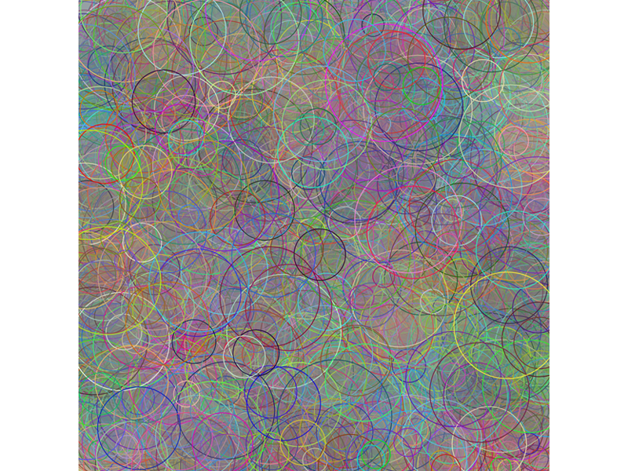
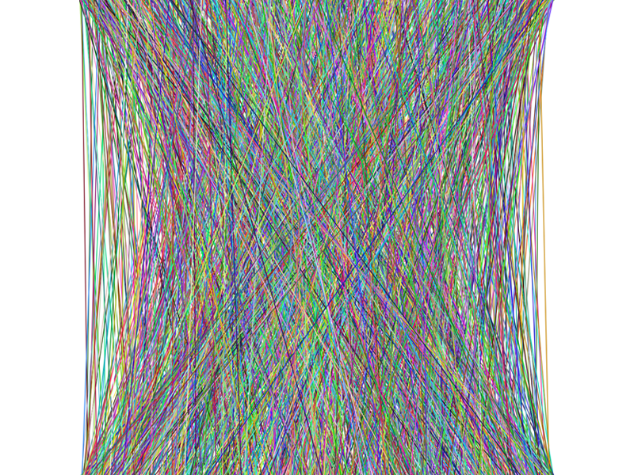
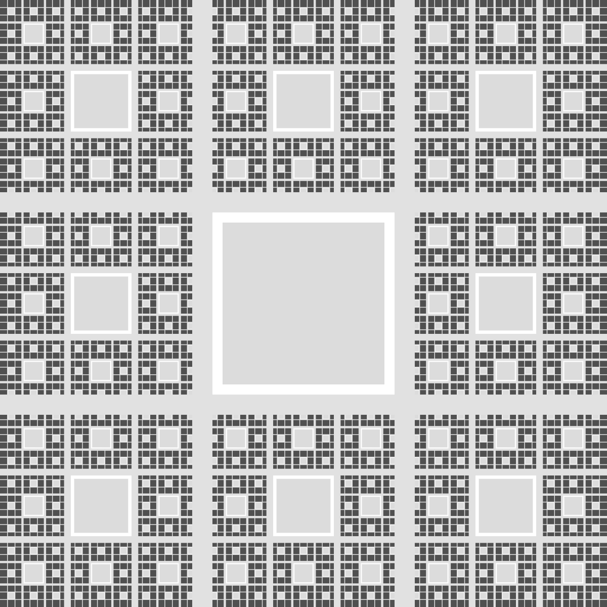
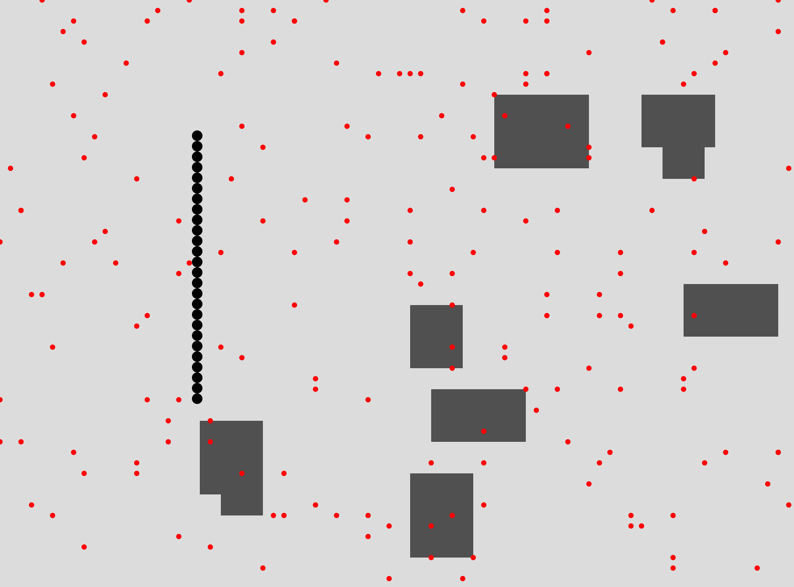
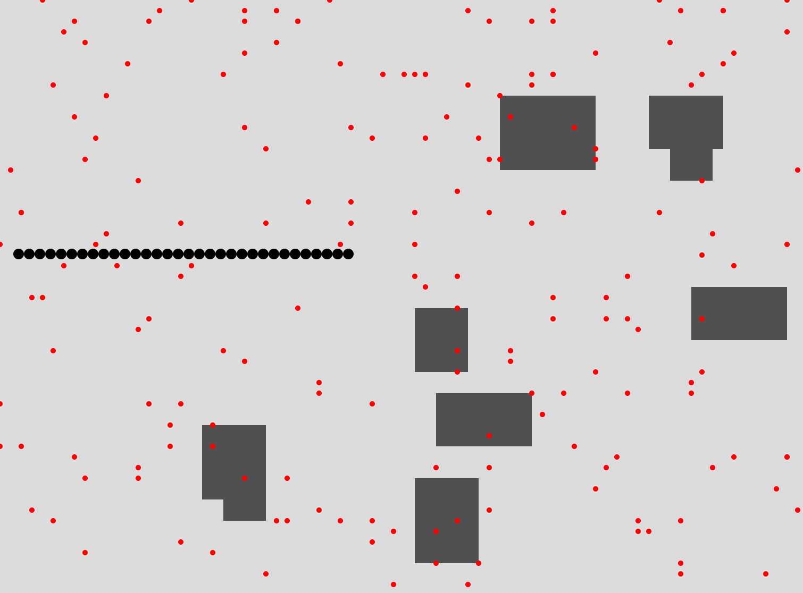
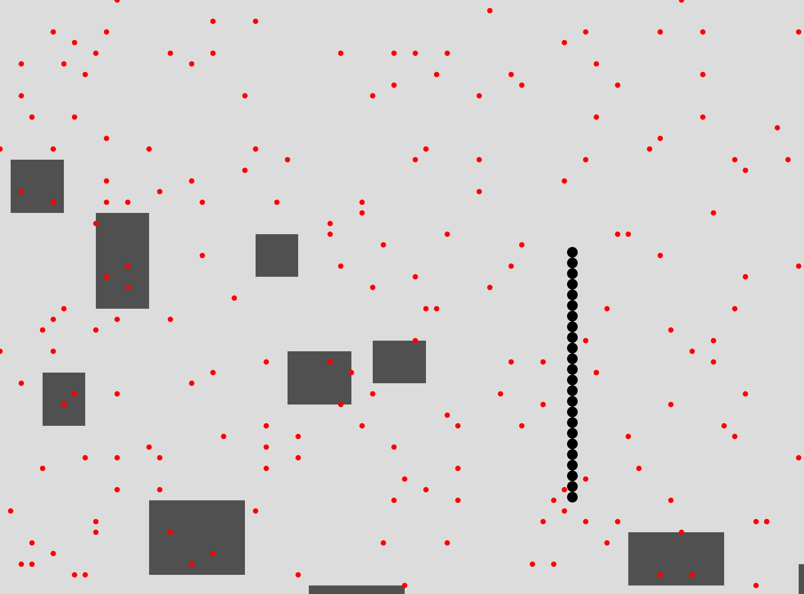

Σύντομη περιγραφή άσκησης: Σε καμβά 400x400 px με φόντο χρώματος 50, σχεδιάζονται δύο κόκκινες διαγώνιες γραμμές, μια κεντρική έλλειψη, ένα κόκκινο τετράγωνο και τέσσερις έλλειψεις γύρω από το κέντρο με γεμίσματα διαφορετικών χρωμάτων και περίγραμμα χρώματος 0. Στο τέλος, εκτελείται η σύνθεση με το πάτημα του κουμπιού "έναρξη".
Πρόβλημα 2 Σύντομη περιγραφή άσκησης: Σε καμβά 600x600 px με λευκό φόντο, δημιουργείται ένας κύκλος με τυχαίο μέγεθος, θέση και χρώμα (r, g, b). Το περίγραμμα και το ημιδιαφανές γέμισμα έχουν την ίδια τυχαία απόχρωση. Η δημιουργία ολοκληρώνεται με το πάτημα του κουμπιού "έναρξη".
Πρόβλημα 3 Σύντομη περιγραφή άσκησης: Σε καμβά 600x600 px με λευκό φόντο, σχεδιάζεται μια διαγώνια γραμμή με τυχαίο χρώμα και τυχαίες οριζόντιες θέσεις εκκίνησης και τερματισμού. Η εκτέλεση ολοκληρώνεται με το πάτημα του κουμπιού "έναρξη".
Σύντομη περιγραφή άσκησης: Το πρόγραμμα δημιουργεί ένα πλέγμα 25x25 κελιών σε έναν καμβά 600x600 pixels. Κάθε κελί χωρίζεται σε μικρότερα υποκελιά με τυχαίο αριθμό υποδιαιρέσεων, τα οποία εμφανίζονται σε διαφορετικές αποχρώσεις ενός βασικού μοβ χρώματος. Όταν ο χρήστης κάνει κλικ σε οποιοδήποτε υποκελί, αυτό αλλάζει χρώμα σε μία νέα τυχαία απόχρωση, προσθέτοντας ένα διαδραστικό στοιχείο στον οπτικό σχεδιασμό.
Πρόβλημα 2 Σύντομη περιγραφή άσκησης: Αυτό το πρόγραμμα δημιουργεί μια αφηρημένη αναπαράσταση αστικού ιστού με τη χρήση ενός αναδρομικού φράκταλ. Ο χώρος χωρίζεται επανειλημμένα σε μικρότερα τετράγωνα, σχηματίζοντας ένα πλέγμα που περιλαμβάνει κτίρια, δρόμους και αυλές. Σε κάθε επίπεδο υποδιαίρεσης, το κεντρικό τετράγωνο μετατρέπεται σε ανοιχτόχρωμη αυλή, ενώ τα υπόλοιπα οκτώ τετράγωνα είτε γεμίζουν με σκουρόχρωμα χρώματα για να δηλώσουν την παρουσία κτιρίων, είτε επαναλαμβάνουν τη διαδικασία της υποδιαίρεσης. Παράλληλα, προστίθενται οριζόντιοι και κατακόρυφοι δρόμοι που διατρέχουν τον καμβά σε καθορισμένες θέσεις, συνθέτοντας ένα δίκτυο που θυμίζει πολεοδομικό σχεδιασμό. Το αποτέλεσμα είναι μια σύνθετη γεωμετρική δομή που παραπέμπει σε χάρτη πόλης ή αρχιτεκτονικό masterplan με εσωτερικές αυλές και συστηματική ρυμοτομία.
Πρόβλημα 3   Σύντομη περιγραφή άσκησης: Πρόκειται για μια απλοποιημένη έκδοση του κλασικού παιχνιδιού "Snake", υλοποιημένη σε περιβάλλον p5.js. Ο χρήστης ελέγχει ένα φίδι που ξεκινά από το κέντρο της οθόνης και κινείται πάνω σε ένα πλέγμα (grid) χρησιμοποιώντας τα βελάκια του πληκτρολογίου. Σκοπός του παιχνιδιού είναι να συλλέγει τροφές, οι οποίες εμφανίζονται ως κόκκινα σημεία σε τυχαίες θέσεις, και κάθε φορά που το φίδι "τρώει" μια τροφή, το μήκος του αυξάνεται. Παράλληλα, στην οθόνη υπάρχουν διάσπαρτα κτήρια-εμπόδια, τα οποία το φίδι πρέπει να αποφεύγει. Αν προβλέπεται σύγκρουση με κάποιο εμπόδιο, το φίδι σταματά να κινείται προς εκείνη την κατεύθυνση. Το φίδι τυλίγεται στην άκρη της οθόνης, συνεχίζοντας την πορεία του από την αντίθετη πλευρά. Η κίνηση, η αύξηση του μήκους και η αποθήκευση των θέσεων του σώματος γίνονται δυναμικά μέσα από κατάλληλες συνθήκες και δομές δεδομένων. Το πρόγραμμα αποτελεί ένα λειτουργικό και γραφικά απλό παιχνίδι, με βασικούς μηχανισμούς αλληλεπίδρασης και ανάπτυξης.
Σύντομη περιγραφή άσκησης: Το έργο συνιστά μια διαδραστική ψηφιακή εγκατάσταση, που θα παρουσιάζεται στο πλαίσιο έκθεσης με ενημερωτικό χαρακτήρα. Η εφαρμογή αυτή αξιοποιεί θερμοκρασιακές μετρήσεις ως πρωτογενή δεδομένα για την οπτικοποίηση ενός περιβαλλοντικού φαινομένου. Μέσα από καμπύλες και ψηφιακές πτυχώσεις, η εγκατάσταση δημιουργεί τοπία που μοιάζουν φυσικά, αλλά προκύπτουν αποκλειστικά από τιμές θερμοκρασίας. Μέσω της τρισδιάστατης ψηφιακής απεικόνισης, το κοινό έρχεται σε επαφή με ένα δυναμικό ψηφιακό “τοπίο” που μεταφράζει αριθμητικά στοιχεία σε οπτικά ερεθίσματα, επιδιώκοντας να ενισχύσει την κατανόηση και ευαισθητοποίηση γύρω από τις κλιματικές μεταβολές. Η προσέγγιση του έργου συνδυάζει τη συλλογή επιστημονικών δεδομένων με καλλιτεχνικές μεθόδους αναπαράστασης, προσφέροντας μια ερμηνεία των δεδομένων που δεν περιορίζεται στη συμβατική παρουσίασή τους, αλλά ενθαρρύνει την ενεργή εμπλοκή του θεατή. Ως εφαρμογή οπτικοποίησης δεδομένων και ταυτόχρονα διαδραστική εγκατάσταση, το έργο κατατάσσεται σε ένα διεπιστημονικό πλαίσιο, όπου τέχνη, επιστήμη και τεχνολογία συναντώνται.